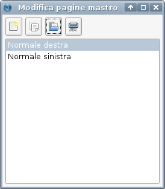
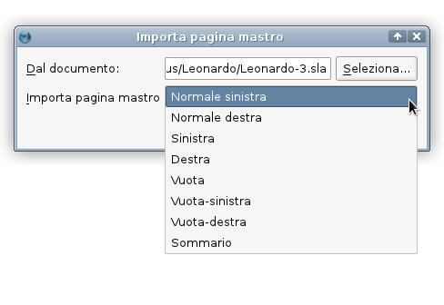
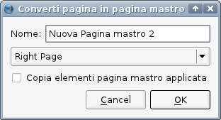
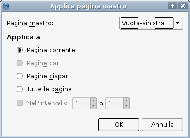
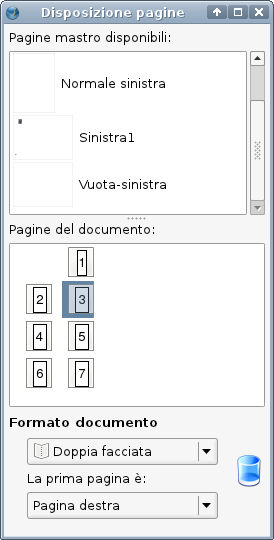

Le pagine mastro sono il mezzo che permette di inserire automaticamente nelle pagine normali degli elementi che si ripetono uguali su ciascuna di esse, come numeri di pagina, titoli di capitolo, intestazioni di sezione, e simili. Se avete utilizzato altri programmi di impaginazione, il concetto di sfondi fissi per le pagine potrebbe esservi familiare. Un aspetto fondamentale del loro funzionamento è che non sono modificabili nel normale spazio di lavoro. Tutto il contenuto di una pagina mastro, tranne i numeri di pagina, consiste in elementi fissi posti sullo sfondo del documento.
Una progettazione attenta e intelligente delle pagine mastro può rendere molto più semplice e veloce la creazione di documenti complessi; più un documento è complesso, più l'uso di pagine mastro è essenziale. Vi sono parecchi motivi per usare le pagine mastro, tra cui la capacità di aggiungere automaticamente i numeri di pagina, e la possibilità di evitare l'inserimento ripetuto in più pagine di oggetti che devono trovarsi nella stessa posizione in ciascuna di esse.
Ci sono due modi di creare una pagina mastro. Il più ovvio è quello di crearne una da zero, e questa è un'operazione piuttosto semplice: andate in Modifica > Pagine mastro, e si aprirà la finestra di dialogo pagine mastro:
|  |
Come vedete, una o più pagine mastro sono state create automaticamente all'apertura di un nuovo documento. Quante e di quali tipi ne sono state create dipende dal formato documento che avete scelto: i formati a pagina singola hanno una sola pagina mastro, quelli a doppia pagina ne hanno due, e così via. In genere è una buona idea lasciare invariata la pagina mastro “Normale” e crearne altre secondo necessità.
La finestra di dialogo Modifica pagine mastro mostrata qui sopra contiene quattro opzioni, che da sinistra a destra sono:
|  |
|  |
Così come c'è più di un modo di creare pagine mastro, c'è più di un modo di applicarle.
Il modo più ovvio di applicare una pagina mastro è da Pagina > Applica pagina mastro. Selezionando questa voce, si apre la seguente finestra di dialogo:
|  |
Nel menù a discesa in alto potete scegliere la pagina mastro che volete applicare.
Le opzioni al di sotto permettono di scegliere l'intervallo di pagine a cui la pagina mastro selezionata sarà applicata:
Il pannello Disposizione pagine (che si apre dal menù Finestre) fornisce un modo veloce di applicare le pagine mastro trascinandole col mouse, di spostarsi tra le pagine, di spostare e inserire pagine. La metà superiore del pannello mostra le pagine mastro disponibili nel documento. Facendo clic col tasto destro su una delle pagine mastro elencate potete attivare una sua anteprima in formato ridotto. La metà inferiore elenca le pagine (normali) presenti nel documento. Per applicare una pagina mastro, basta selezionarla nella metà superiore e trascinarla con il mouse sopra la pagina (normale) desiderata.
|  |
Importante: gli elementi contenuti in una pagina mastro si trovano sempre al di sotto degli elementi contenuti nelle pagine normali. Non è possibile spostare un elemento di una pagina mastro sopra un elemento di una pagina normale.